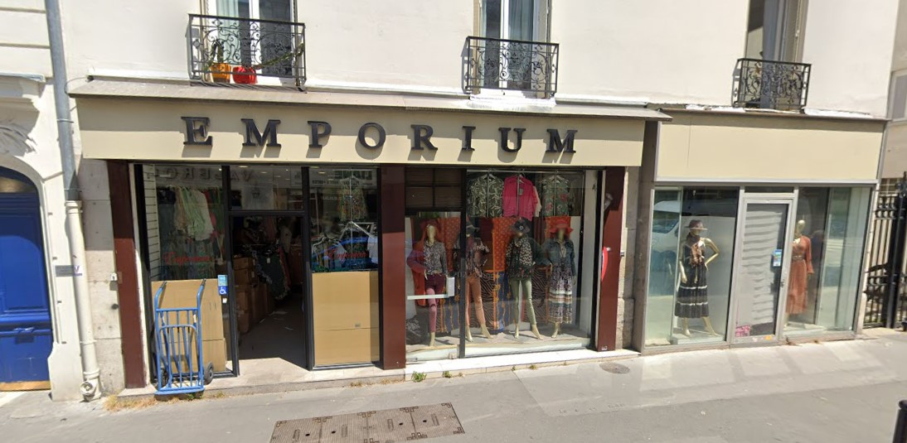

Stage de 1ère année
À Propos d'EMPORIUM
J’ai effectué mon stage au sein d'EMPORIUM, une entreprise dynamique spécialisée dans
le commerce de gros d'habillement et d’accessoires. C’est une Société à responsabilité
limité.
Avec une équipe de 3 salariés, EMPORIUM est basée au 32 rue de Popincourt dans le 11e arrondissement de
Paris et a été fondée en 2005 par M. Zhongxian DAI.

Historique : Emporium a débuté son activité en mars 2005 avec mon tuteur de stage M. Zhongxian Dai qui gère l’entreprise depuis plus de 18 ans.
RGPD : L'entreprise s'engage à garantir la confidentialité, la sécurité et l'intégrité des informations personnelles collectées.
Ressources tangibles : Emporium dispose d'un point de distribution efficace, d'un vaste inventaire de produits de mode, et d'une solide base de clients et de fournisseurs.
Ressources intangibles : L’entreprise bénéficie d'une équipe polyvalente, et d'une connaissance des tendances du marché de la mode.
RSE : L'entreprise minimise son empreinte environnementale en privilégiant des produits de mode fabriqués en Italie par une main-d'œuvre travaillant dans de bonnes conditions. De plus, l’entreprise préconise la vente de vêtements en lin.
Mes différentes missions
- Création d’une base de données et saisie des données.
- Création du design et de la charte graphique du site web avec figma.
- Développement côté client et côté administrateur (Inscription, connexion, CRUD de toutes les tables, requêtes SQL).
- Compte rendu hebdomadaire de l'avancement du projet au magasin.
La base de donnée :

L'accueil du site :

La création d'un article du coté administrateur :

Ce stage m'a permis d'acquérir de nouvelles compétences et d'approfondir mes connaissances. J'ai pu mettre en pratique les connaissances acquises lors de ma formation en BTS SIO SLAM. Bien que la charge de travail ait été importante pour une seule personne, j'ai pu développer une expertise solide dans la création de sites web en utilisant PHP.